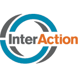
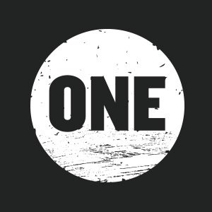

Kimberly Abbott
VP of Communications
Mobile: +001 202-441-4404
Email: kimberly.abbott@worldlearning.org
Skype: kabbottcrisisgroup
Before...
 
Why I left journalism and joined NGOs
- journalist for 10 years
- Bosnia
- plane crashes
- 9/11
- school shootings
- saw many NGOs floundering in media landscape, work going unnoticed
- wanted to tell the stories of these great organizations
- "the answer to my anxiety about the world"
Journalism transformed
- Foreign bureaus closing
- few exceptions
- follow-up, context, nuance, analysis - all suffer
- social media: not "either/or", but "and"
- reporters have to do it all, stretched to their limits
“The National Press Club system, if it ever existed, is now on Twitter. We can engage directly, see what a journalist is working on and where it intersects with our issues.”-Michael Boyce, Communications Officer, Refugees International
And NGOs, too
- while news orgs have retreated, NGOs (and their comms officers) have spread
- successful NGOs meeting audiences where they are:
- social media
- video
- podcasts
- blogs
- not optional
“We can’t make people come to us or make them absorb our information they way we want. We have to read and monitor how everyone is consuming the news and how they are getting their policy messages, and how they are working.”-Vanessa Parra, Press Officer, Oxfam
Trends
Let's dive down
What can we do?
- video
- audio
- powerful stories
- new media opportunities
- take advantage of current trends
- expert commentary (arrow down to see some ideas!)

And how can we help you?
- travel to the field
- turn quick debriefs into media products
- work with local crews and photographers
- arrange for Skype interviews with global news outlets
- set you up to capture live video, anywhere
- help shape stories, messaging
- provide training on cutting edge tools
- help with media connections, local and global
- ...and more!